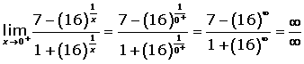

Ejercicios de continuidad II
1Encontrar los puntos de discontinuidad de la función f(x) = x2 + 1 + |2x − 1|.
2Se considera la función
Si f(2) = 3, determinar los valores de a y b para que f(x) sea continua.
3Dada la función:
Determinar el valor de a para que la función sea continua para x = 3.
4Dada la función:

Determinar los puntos de discontinuidad de la función.
5Dada la función
Determinar a y b de modo que la función f sea continua para todo valor de x.
6Sea la función:
Determinar el valor de a para que f(x) sea continua.
7Calcular el valor de k para que la siguiente función sea continua.
8Dada la función:
Hallar a y b para que la función sea continua.
9Calcular los valores de a y b para que la siguiente función sea continua.
- 1
- 2
- 3
- 4
- 5
- 6
- 7
- 8
- 9
Ejercicio 1 resuelto
Encontrar los puntos de la función f(x) = x2 + 1+ |2x − 1| es discontinua.

La función es continua en toda  .
.
Ejercicio 2 resuelto
Se considera la función
Si f(2) = 3, determinar los valores de a y b para que f(x) sea continua.
Sólo existe duda de la continuidad en x = 1.


Para que la función sea continua debe cumplirse que:

Por otro lado tenemos que:

Resolvemos el sistema de ecuaciones y obtenemos que:
a = 1 b = −1
Ejercicio 3 resuelto
Dada la función:
Determinar el valor de a para que la función sea continua para x = 3.


Ejercicio 4 resuelto
Dada la función:
Determinar los puntos de discontinuidad de la función.
La función exponencial es positiva para toda x ∈ , por tanto el denominador de la función no se puede anular.
Sólo hay duda de la continuidad en x = 0.


Resolvemos la indeterminación dividiendo por 

La función es continua − {0}.
Ejercicio 5 resuelto
Dada la función
Determinar a y b de modo que la función f sea continua para todo valor de x.


Ejercicio 6 resuelto
Sea la función:
Determinar el valor de a para que f(x) sea continua.
En esta función a trozos las dos funciones parciales son continuas en sus dominios. Estudiaremos el comportamiento de la función en el punto de unión.


Ejercicio 7 resuelto
Calcular el valor de k para que la siguiente función sea continua.


Por tanto no existe límite y, por consiguiente no se puede conseguir que f(x) sea continua en x=0, sea cual sea el valor que se le dé a k.
Ejercicio 8 resuelto
Hallar a y b para que la función sea continua.


Ejercicio 9 resuelto
Calcular los valores de a y b para que la siguiente función sea continua.


b= 1
3a = −2 a = −1
 Ejercicios
Ejercicios